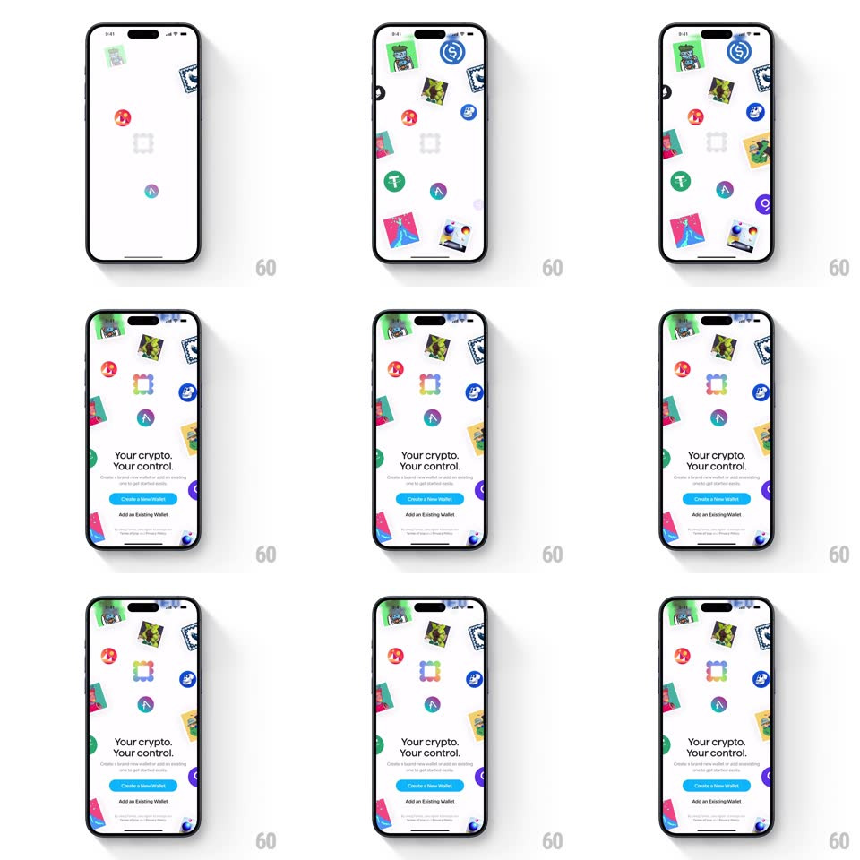

Media
Frame-by-frame

Rebuild this animation 1:1: Family's splash - colorful crypto icons and NFT cards burst onto a white screen with springy pops and float in place, then an onboarding sheet slides up ("Your crypto. Your control.", Create a New Wallet / Add an Existing Wallet) over the drifting icon field.

Rebuild this animation 1:1: Family's splash - colorful crypto icons and NFT cards burst onto a white screen with springy pops and float in place, then an onboarding sheet slides up ("Your crypto. Your control.", Create a New Wallet / Add an Existing Wallet) over the drifting icon field.
## Integration
Integration: stack-agnostic spec - springs given as stiffness/damping, timed motions as duration + curve; map every value to your framework and animation library of choice.
## Scene
White field scattered with crypto coin icons (blue, green, red, purple circles) and tilted NFT art cards. Bottom sheet: bold "Your crypto. Your control.", small explainer, blue "Create a New Wallet" pill, "Add an Existing Wallet" text button, terms footnote.
## Motion spec
Pattern: icon burst field + sheet entrance.
- Icons and cards pop in one by one from the center outward (each: scale 0 -> 1.15 -> 1, spring ~420/16, ~350ms, 40ms stagger, assigned slight rotations ±10deg).
- Once placed, each floats on its own slow loop (translateY ±6px, rotate ±3deg, 3-5s randomized phases) - the field feels alive.
- At ~2s the bottom sheet slides up (spring ~300/26, ~450ms) with a soft top-corner radius, dimming the icon field behind it (black 15%).
- Sheet content staggers in: title (rise 12px + fade, 250ms), explainer (150ms later), buttons (another 150ms).
- The icon field keeps drifting behind the sheet, visible in the gap above it.
## Calibration
- Pop stagger is radial from screen center - outer icons land last.
- Floating loops never sync up; randomized phase offsets are required.
## Reduced motion
Icons fade in all at once and stay static; sheet fades up.
## Don't miss
- NFT cards are rectangular and tilted, coins are round - two distinct shape families in the field.
- The sheet is not full height; the drifting field stays visible above it.